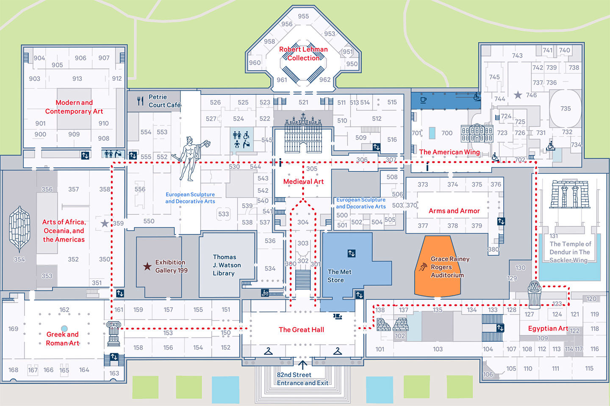
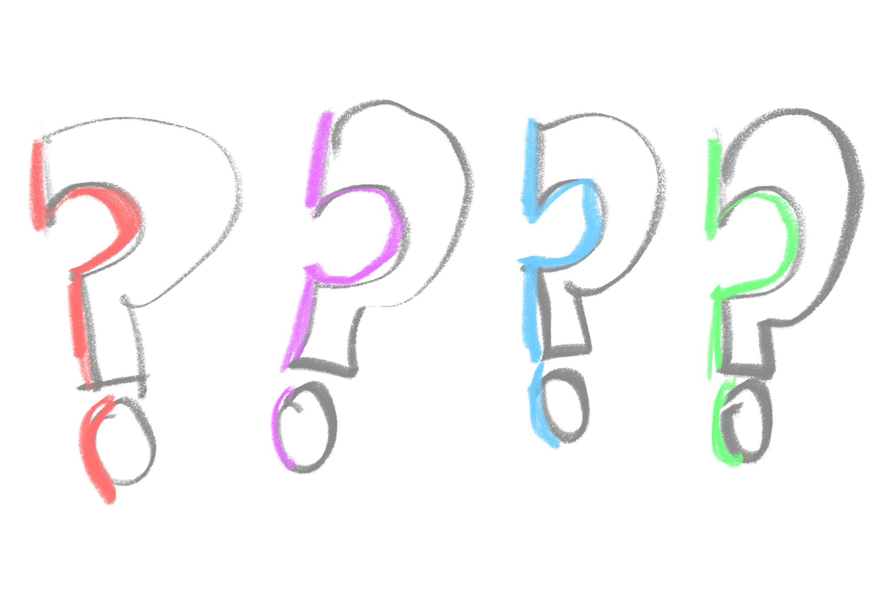
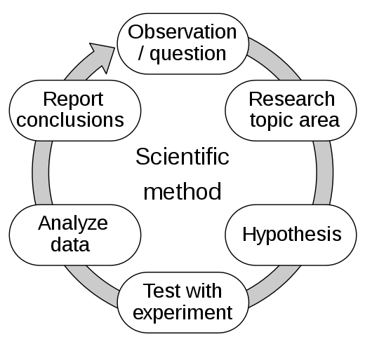

PSYC 2530: What is cognition?
A general overview
Last compiled 08/25/21
Matthew J. C. Crump
Last compiled 08/25/21
Readings are chapter 1 What is cognition? and 2 Mental Imagery from the textbook.
A quiz will be posted TODAY, August 30th, and open until Sunday, September 12th. It will cover material from the first two chapters, with a focus on the second chapter.

Like a museum has many rooms and artifacts, there are a great diversity of ideas, approaches in cognition.
Museum’s are too big to see all in one day, or even a semester, just like cognition

Ulric Neisser defined cognition in 1967 as:
“…all processes by which the sensory input is transformed, reduced, elaborated, stored, recovered, and used.”
This definition is still current, but we will expand on it in this course

Neisser is also quoted as saying:
“If X is an interesting or socially important aspect of memory, then psychologists have hardly ever studied X”
Cognition is partly an unfulfilled promise…Lot’s of work has been done, there are many more interesting questions to ask…
Research questions are typically about how some cognitive ability works. For example:
Research questions are often grouped into domains of specialization. Some of the textbook chapters are grouped by domain. Some general domains in cognition include:
Learning, Memory, Attention, Perception, Reasoning, Categorization, Concept formation, judgment and decision-making, Language, semantic knowledge, skill-acquisition, music perception, motor control, cognitive control, creativity, emotion…
How do cognitive researchers figure out how cognitive abilities work?

The research cycle involves a wide variety of methods–such as the scientific method–that researchers use to generate knowledge about cognition.

Readings are chapter 1 What is cognition? and 2 Mental Imagery from the textbook.
A quiz will be posted on Monday, August 30th, and open until Sunday, September 12th. It will cover material from the first two chapters, with a focus on the second chapter.